一、Linux概述 unix和LInux的关系¶
LInux的应用领域 服务器领域 - Linux在服务器领域的应用是最强的 - LInux免费、稳定、高效等特点在这里得到了很好的体现，尤其是在一些高端领域尤为广泛 嵌入式领域 - linux运行稳定、对网络的良好支持性、低成本，且可以根据需要进行网络裁剪，内核最小可达到几百kb的特点，使近些年来在嵌入式领域的应用得到非常大的提高 - 主要应用:机顶盒、数字电视、网络电话、程控交换机、手机、PDA、智能家居、智能硬件等都是其应用领域。以后在物联网中应用会更加广泛。
unix和LInux的关系

LInux的应用领域
服务器领域
Linux在服务器领域的应用是最强的
LInux免费、稳定、高效等特点在这里得到了很好的体现，尤其是在一些高端领域尤为广泛
嵌入式领域
linux运行稳定、对网络的良好支持性、低成本，且可以根据需要进行网络裁剪，内核最小可达到几百kb的特点，使近些年来在嵌入式领域的应用得到非常大的提高
主要应用:机顶盒、数字电视、网络电话、程控交换机、手机、PDA、智能家居、智能硬件等都是其应用领域。以后在物联网中应用会更加广泛。
LInux的吉祥物tux

Linux主要的发行版本
Ubuntu（乌班图）、RedHat（红帽）、CentOS
vm与Linux的关系

VMware网络连接的三种模式
桥接模式
VMWare会虚拟一块网卡和真正的物理网卡就行桥接，这样，发到物理网卡的所有数据包就到了VMWare虚拟机，而由VMWare发出的数据包也会通过桥从物理网卡的那端发出。桥接网络是指本地物理网卡和虚拟网卡通过VMnet0虚拟交换机进行桥接。相当于在一个局域网内创立了一个单独的主机，他可以访问这个局域网内的所有的主机
该模式下主机网卡和虚拟机网卡的IP地址处于同一个网段，子网掩码、网关、DNS等参数都相同
桥接模式下虚拟机和主机在网络上地位相等，可以理解为一台新的电脑

NAT模式
虚拟系统会通过真实主机的网络来访问外网，而真实主机相当于有两个网卡：真实网卡和虚拟网卡，真实网卡相当于链接了现实世界的真实路由器，而虚拟网卡相当于链接一个虚拟交换机/路由器（这个虚拟交换机同时链接虚拟机和真实主机）,此时虚拟机想访问外网就必须通过真实主机IP地址，而外面看来也确实是真实主机的IP地址，实则是虚拟机访问的，完全看不到虚拟网络局域的内部形式。
网络地址转换模式。虚拟机系统可以和外部系统通讯，不早造成IP冲突
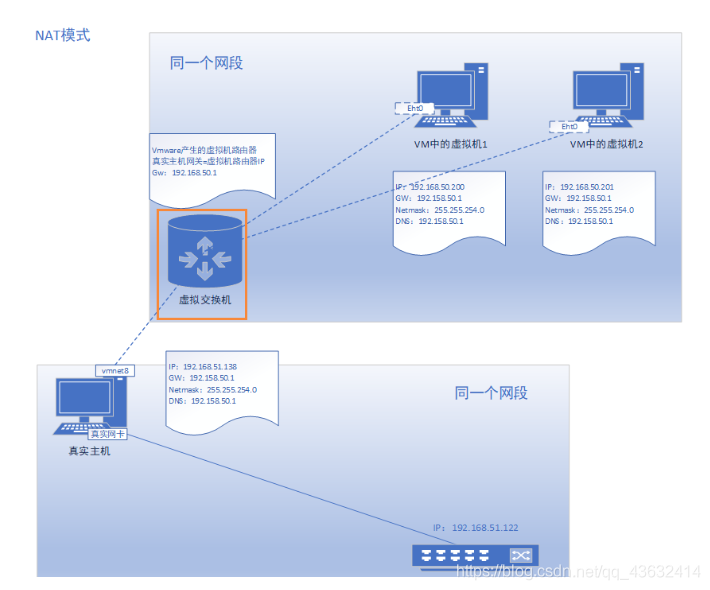
主机模式
他就是一个独立的系统，不和外界发生联系
二、Linux目录结构（重点）¶
2.1基本介绍¶
linux的文件系统是采用级层式的树状目录结构，在此结构上的最上层是根目录“/”，然后在此目录下在创建其他的目录。
深刻理解linux树状文件目录是非常重要的
记住一句很经典的话：在LInux世界里，一切皆文件
2.2具体的目录结构¶
/bin 【常用】（/usr/bin、/uer/local/bin)
是Binary的缩写，这个目录存放着最常使用的命令
/sbin （/usr/sbin、/usr/local/sbin）
s就是Super user的意思，这里存放的是系统管理员使用的系统管理程序
/home 【常用】
**存放普通用户的主目录，**在Linux中每个用户都有一个自己的目录，一般该目录是以用户的账号命名 , 产生的新用户就是放在这里

/root 【常用】
**该目录为系统管理员，**也称作超级权限者的用户主目录
/lib 系统开机所需要的最基本的动态链接共享库，起作用类似于Windows里的DLL文件。几乎所有的应用程序都需要用到这些共享库
/lost+found 这个目录一般情况下是空的，当系统非法关机后，这里就存放了一些文件
etc 【常用】
**所有的系统管理所需要的配置文件和子目录，**比如安装mysql数据库，my.conf
里面有一个文件 usr/passwd文件 是和组有关的
/usr 【常用】
这是一个非常重要的目录，用户很多**应用程序都放在这个目录下，类似于windows下的program files目录。 **
/boot 【常用】
存放的是启动Linux时使用的一些核心文件，包括一些链接文件以及镜像文件
/proc [不能动 ]这个目录是一个虚拟的目录，他是系统内存的映射，访问这个目录来获取系统信息
/srv service [不能动 ] 缩写，该目录存放一些服务器启动后需要提取的数据
/sys [不能动] 这是linux2.6内核的一个很大的变化，该目录下安装了2.6内核中新出现的一个文件系统sysfs
/tmp 这个目录是用来存放一些临时文件的
/dev
类似于windows的设备管理器，把所有的硬件用文件的形式存储
/media【常用】linux系统会自动识别一些设备，例如U盘，光驱等等，当识别后，linux会把识别的设备挂载到这个目录下
/mnt 【常用】
系统提供该目录是为了让用户临时挂载别的系统文件，我们可以将外部的存储挂载在/mnt/上，然后进入该目录就可以查看里面的内容了。D:/mushare
**/opt 这是给主机额外的安装软件所存放的目录。**如安装ORACLE数据库就可以放到该目录下。默认为空
/usr/local【常用】
软件安装好的地方. 这是另一个给主机额外安装软件所安装的目录。一般是通过编译源码的方式安装的程序
/var 【常用】
这个目录中存放着在不断扩充的东西 ，习惯的将经常修改的目录放在这个目录下。包括各种==日志文件==
/selinux 【security-enhanced linux】
**SELinux是一种安全子系统，**他能控制程序自能访问特定的文件，有三种工作模式，可以自行设置
三、vi和vim编辑器¶
3.1 vi和vim的基本介绍¶
Linux系统会内置vi文本编辑器
Vim具有程序编辑的能力，可以看做是Vi的增强版本，可以主动的以字体颜色辨别语法的正确性，方便程序设计。代码补完、编译错误跳转等方便编程的功能相当丰富，在程序员中被广泛使用。（vim就是vi的增强版）
3.2 vi和vim常用的三种模式¶
正常模式
以vim打开一个档案就直接进入一般模式了（这是默认的模式）。在这个模式中，可以使用【上下左右】键来移动光标，你可以使用【删除字符】或【删除整行】来处理档案内容，也可以使用【复制、粘贴】来处理你的文件数据。
插入模式
按下i，I，o，O，a，A，r，R等任何一个字母之后才会进入编辑模式，一般来说按i就可
命令行模式
在这个模式中，可以提供你相关指令，完成读取、存盘、替换、离开vim、显示行号等动作则是在此模式中达成的！

四、LInux开机，重启和用户登录注销¶
4.1关机和重启的命令¶
基本介绍
shutdown -h now 立刻进行关机
shutdown -h 1 ”hello，1分钟后会关机了“
shutdown -r now 现在重新启动计算机
halt 关机
reboot 重新启动
syn 把内存的数据同步到磁盘
注意细节
1.不管是重启系统还是关闭系统，首先要运行sync命令，把内存中的数据写到磁盘中
2.目前的shutdown/reboot/halt等命令均已 在关机前进行了sync
4.2用户登录和注销¶
基本介绍
1、登陆时尽量少用root账号登录，因为他是系统管理员，最大的权限，避免操作失误。可以利用普通用户登录，
登陆后再用 ”su - 用户名“ 命令来切换成系统管理员身份
2、在提示符下输入logout即可注销用户
使用细节
logout 注销指令在图形运行级别无效，在shell界面有效
五、用户管理¶
5.1基本介绍¶
Linux系统是一个多用户多任务的操作系统，任何一个要使用系统资源的用户，都必须先向系统管理员申请一个账号，然后以这个账号的身份进入系统
5.2添加用户¶
基本语法
useradd -m 用户名
useradd -m -g 组名 用户名
实列(root权限下)
useradd hucheng
添加一个用户chucheng，默认该用户的家目录在/home/hucheng
细节说明
会自动的创建和创建的用户同名的家目录
1、当用户创建成功后，会自动的创建和用户同名的家目录
2、也可以通过useradd -d 指定目录 新的用户名 来给新创建的用户指定家目录
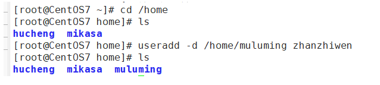
新建用户zhanzhiwen的home目录下的文件夹名称是muluming
5.3指定/修改密码¶
基本语法
passwd 用户名
实例

补充，显示当前用户所在的目录pwd
5.4 删除用户¶
基本语法
userdel -r 用户名
实例
1.删除用户zhanzhiwen，但是要保留目录
2.删除用户以及用户主目录 ，userdel -r 用户名 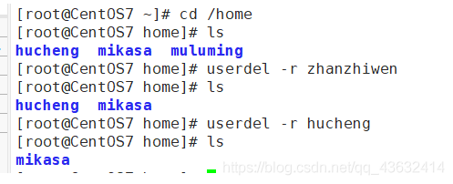
5.5查询用户信息 指令¶
基本语法
id 用户名
实列

细节说明
当用户不存在是，返回无此用户
5.6切换用户¶
介绍
在操作Linux时，如果当前用户的权限不够，可以通过su - 指令，切换到更高权限的用户，如root
基本语法
su - 用户名
实列说明

细节说明
1.从权限高的用户切换到权限低的用户时，不需要输入密码，反之需要
2**.当需要返回到原来用户时，使用exit/logout指令 建议使用 logout **
5.7 查看当前用户/登录用户的信息¶
基本语法
whoami/who am i
实例

细节说明
查看的是登录的用户！
5.8 用户组¶
介绍
类似于角色，系统可以对有共性/权限的多个用户进行统一的管理
新增组
指令：groupadd 组名
删除组
指令：groupdel 组名
注意：如果当添加用户时没有指定组，会默认创建和这个用户同名的组，同时把用户放到该组里

增加用户时直接加上组
指令：useradd -g 用户组 用户名
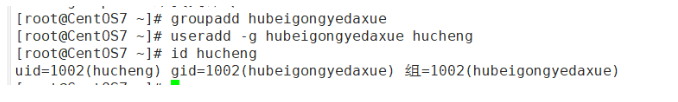
移动组
usermod -g 组名 用户名

5.9 用户和组相关文件¶
/etc/passwd 文件
用户（user）的配置文件，记录用户的各种信息
每行的含义：用户名：口令：用户标识号：组标识号：注释性描述：主目录： 登录Shell
/etc/shadow文件
口令配置文件
每行的含义：登录名：加密口令：最后一次修改时间：最小时间间隔：最大时间间隔：警告时间：不活动时间：失效时间：标志
/etc/group文件
组（group）的配置文件，记录Linux包含的组的信息
每行含义：组名：口令：组标识号：组内用户列表
六、实用指令¶
6.1指定运行级别¶
基本介绍
运行级别说明：
0：关机
1：单用户【找回丢失密码】
2：多用户状态没有网络服务
3：多用户状态有网络服务
4：系统未使用保留给用户
5：图形界面
6：系统重启
常用运行级别是3和5，也可以指定默认运行级别
应用实例
命令：init[0123456]应用案例：通过init来切换不同的运行级别，比如动5-3，然后关机
查看当前的运行级别
systemctl get-ddefault

改变为 systemctl set-default multi-user.target007
6.2帮助指令¶
man获得帮助信息
基本语法：man [命令或配置文件]（功能描述：获得帮助信息）
如:
man ls
设置中文
(28条消息) centos7设置man下显示中文_思维触发行为的博客-CSDN博客_centos man 中文
中文查看命令
cman ls
在linux下隐藏文件是以 “.” 开头的
help指令
基本语法：help 命令 （功能描述：获得shell内置命令的帮助信息）
6.3文件目录类(重要)¶
pwd指令
功能描述：显示当前工作目录的绝对路径
理解：绝对路径和相对路径（相对路径是针对当前位置的路径）
基本语法：pwd
ls指令
基本语法：ls [选项] [目录或是文件]
常用选项
-a ： 显示当前目录所有的文件和目录，包括隐藏的
-l ： 以列表的方式显示信息
cd指令
基本语法：cd [参数] （功能描述：切换到指定的目录）
cd 或者cd ~ 回到自己的家目录 ~开始的
cd … 回到当前目录的上一级目录
mkdir指令
理解：mkdir指令用于创建目录（默认只能创建一级目录）
基本语法：mkdir [选项] 要创建的目录
常用选项
-p :创建多级目录
拓展: 可以用 > 创建单目录
/var/log/hsp.log 单用 > 表示将空写入文件
将空内容覆盖写入到 此文件，如果该文件不存在，就创建该文件
rm指令（用于删除空目录）
基本语法：rm -rf 要删除的空目录
使用细
-rf 递归删除整个文件夹
如果需要删除非空目录，需要使用 rm -rf 要删除的目录
rm指令（remove，移除文件或目录）=一定要小心！！！
基本语法：rm [选项] 要删除的文件或目录
rm -rf * 删除当前文件夹里的所有内容
常用选项
-r : 递归删除整个文件夹
-f ：强制删除不提示
使用细节：强制删除不提示的方式，带上-f参数即可
mv指令（move，移动文件与目录或重命名)（以可剪切文件夹）
mv oldNameFile newNamefile (功能描述：重命名)
mv /temp/movefile /targetFolder (功能描述：移动文件，剪切)
touch指令（用于创建空文件）
touch 文件名称 // tou 回车就行
cp指令（copy拷贝文件导指定目录）
cp -r source dest
常用选项：
-r 递归复制整个文件夹
应用实例:
将 /home/hello.txt 拷贝到 /home/bbb 目录下
cp /home/hello.txt /home/bbb
递归复制整个文件夹，将/home/aaa 目录下的文件全部拷贝到/home/bbb下
cp -r /home/aaa /hom/bbb
(是将整个目录和目录本身拷贝进来)
使用强制覆盖不提示的方法：\cp
mv指令
mv 移动文件与整个目录 或 重命名
基本语法
mv oldNameFile newNameFile (功能描述：重命名)
mv /temp/movefile /targetFolder (功能描述：移动文件)
应用实例 案例1：将/home/cat.txt文件 重新命名为pig.txt Cut
案例2：将/home/pig.txt 文件 移动到/root目录下
案例3: 移动整个目录:
如/opt/bbb 移动到/home下 mv /opt/bbb /home/
cat指令（查看文件内容）
cat [选项] 要查看的文件
常用选项： -n 显示行号
使用细节：**cat只能浏览文件，而不能修改文件，**为了浏览方便，一般会带上管道命令 |more
cat -n /etc/profile | more
more指令
more指令是一个基于VI编辑器的文本过滤器，它以全屏幕的方式按页显示文本文件的内容。more指令中内置了若干快捷键（交互的指令）
基本语法：
more 要查看的文件
操作说明: 空白键(space) 代表向下翻一页； Enter 代表向下翻「一行」； q 退出 Ctrl+F 向下滚动一屏 Ctrl+B 返回上一屏 二 输出当前行的行号 :f 输出文件名和当前行的行号
less指令
大文件查看
基本语法：
less 要查看的文件
head指令
head用于显示文件的开头部分内容，默认情况下head指令显示文件的前10行内容
基本语法:
head 文件 (功能描述：查看文件头10行内容)
head -n 5文件 （功能描述：查看文件头5行内容，5可以是任意行数）
应用实例 /etc/profile的前面5行代码
tail指令
tail用于输出文件中尾部的内容，默认情况下tail指令显示文件的前10行内容。或者 实时追踪该文档的所有更新 基本语法
tail文件 （功能描述：查看文件尾10行内容）
tail -n 5文件 （功能描述：查看文件尾5行内容，5可以是任意行数)
tail -f 文件(功能描述：实时追踪该文档的所有更新)
应用实例 案例1：查看/etc/profile最后5行的代码tail-n 5/etc/profile 案例2：实时监控 mydate.txt，看看到文件有变化时，是否看到，实时的追加 hello，world
echo指令
输出内容到控制台
基本语法
echo [选项] [输出内容] // ec 回车就行
应用实例 案例：使用echo指令输出环境变量，比如输出 $PATH $HOSTNAME, echo $HOSTNAME
案例：使用echo指令输出hello,world!

指令 > 和>> 指令
输出重定向 和 追加
文件不存在会自动创建
基本语法
ls -l > 文件 （功能描述：列表的内容写入文件a.txt中(覆盖写）
ls -al >>文件 （功能描述：列表的内容追加到文件aa.txt的末尾）
cat 文件1 > 文件2 （功能描述：将文件1的内容覆盖到文件2）
echo"内容” 文件
管道 | 指令
基本语法
指令1 | 指令2
作用: 把第一个命令的输出，作为第二个命令的输入。 需要第二个命令支持这种从管道获取输入的功能
xargs
基本语法
指令1 | xargs 指令2
xargs和管道类似, 与管道不同的是，管道给第二个命令传递是直接传到命令输入上，这种方式要求命令本身的支持，支持的命令较少。
xargs，则是把第一个命令的输出作为参数传递到第二个命令上，这种方式只要第二个命令可以接受参数即可，支持的命令较多。
一个例子：
echo test.txt | cat
test.txt
echo test.txt | xargs cat
显示test.txt中的内容
echo test.txt | cat 是把 “test.txt” 这个字符串直接让cat输出
echo test.txt | xargs cat 是把 “test.txt” 作为参数传递给cat，表示把 test.txt 这个文件的内容输出
exec
基本语法
指令1 -exec 指令2 {} \;
-exec 和 xargs 的作用相似，都是把前一个命令的输出作为参数传给第二个命令
find . -name "test.txt" -exec cat {} \;
显示test.txt中的内容
ln指令 (小写的L)
软连接也称为符号链接，类似于windows里的快捷键方式，主要存放了连接其他文件的路径
基本语法：
ln -s [原文件或目录] [软链接名]
（功能描述：给原文件创建一个软链接）
history指令
查看已经执行过历史命令，也可以执行历史指令
history 显示所有的历史命令
history 10 显示最近使用过的10个指令
!5 执行历史编号为5的指令

查询指定文件和 目录个数
1.统计/opt文件夹下文件的个数
ls -l /opt | grep "^-" | wc -l
2.统计/opt文件夹下目录的个数
ls -l /opt | grep "^d" | wc -l
3.统计/opt文件夹下文件的个数，包括子文件夹里的
ls -lR /opt | grep "^-" | wc -l
4.统计/opt文件夹下目录的个数，包括子文件夹里的
ls -lR /opt | grep "^d" | wc -l
5.以树状显示目录结构
yum install tree
tree /home
6.4时间日期类¶
date指令-显示当前日期
基本语法：
date 显示当前时间
date +%Y 显示当前年份
date +%m 显示当前月份
date +%d 显示当前是哪一天
date "+%Y-%m-%d %H:%M:%S" 显示年月日时分秒 就是自己设计格式
date指令还可以设置日期
date -s 字符串时间
date -s "2021-6-20 16:44:30"
cal指令
查看日历指令
cal [选项] （功能描述：不加选项，显示本月日历）
cal 2021 显示2021整年的日历
6.5搜索查找类¶
find指令 查找指定的文件
find指令指令 将从指定目录向下递归遍历各个子目录，只要满足条件的文件或者目录就显示在终端上
find [搜索范围] [选项]
常用:
1.搜索桌面目录下，文件名包含(1的文件
find 桌面路径 -name "*1*"
2.搜索桌面目录下，所有以.txt]为扩展名的文件
find 桌面路径 -name "*.txt"
3.搜索桌面目录下，以数字1开头的文件
find 桌面路径 -name ""1*"
选项说明（可填选项）
| 选项 | 功能 |
|---|---|
| -name <查询方式> | 按照指定的文件名查找模式查找文件 |
| -user <用户名> | 查找属于指定用户名所有文件 |
| -size <文件大小> | 按照指定的文件大小查找文件 |
| atime +10 | 读取时间 +10是大于十天 -10是小于十天 |
| -mtime | 修改时间 |
| -ctime | 创建时间 |
-atime<24小时数> 查找在指定时间曾被存取过的文件或目录，单位以24小时计算。
说明：当查询路径下无该文件，就不会有任何显示
locate指令
locate指令可以快速定位文件路径。locate命令利用事先建立的系统中所有文件名称及路径的locate数据库实现快速定位的文件名。Locate指令无需遍历整个文件系统，查询速度较快。为了保障查询结果的准确度，管理员必须定期更新locate时刻
基本语法：locate 搜索文件
特别说明：由于locate指令基于数据进行查询，所以第一次运行前，必须是使用updatedb指令创建locate数据库
which指令 ，可以查看某个指令在哪个目录下
grep指令 和 管道符号 | 查找指定的文件中的内容
grep过滤查找，管道符，“|“，表示将前一个命令输出传递给后面的命令处理
基本语法：grep [选项] 查找内容 源文件
选项：
-n 显示匹配行及行号
-i 忽略字母大小写
-v 不查找后面的
两种写法 hello.txt文件夹中输出同样的
cat /home/hello.txt | grep -n "yes"
grep -n "yes" /home/hello.txt
6.6 压缩和解压¶
格式:
指令 目标文件.后缀 源文件1 源文件2
gzip/gunzip指令
gzip用于压缩文件，gunzip用于解压文件的
gzip 文件 （功能描述：压缩文件，只能将文件压缩为*.gz文件
gunzip 文件 （功能描述：解压文件命令）
zip/unzip指令
zip用于压缩文件，unzip用于解压的，在整个项目打包发布中很有用的
zip [选项] xxx.zip (将要压缩的内容（一般是文件和文件夹))
uzip [选项] xxx.zip （功能描述：解压文件）
zip的常用项： -r 递归压缩，即压缩目录
zip -r myhome.zip /home/
unzip的常用项 ： -d <目录> : 指定解压后文件的存放目录
unzip -d /home/dd/
tar指令
tar指令是打包指令，最后打包后的文件是.tar.gz的文件。
tar [选项] xxx.tar.gz 打包的内容 （功能描述：打包目录，压缩后的格式.tar.gz)
记住 -czvf 和 -xzvf
选项说明
| 选项 | 功能 |
|---|---|
| -c | 产生.tar打包文件 |
| -v | 显示详细信息 |
| -f | 指定压缩后的文件名 |
| -z | 打包同时压缩 |
| -x | 解包.tar文件 |
案例;
案例1：压缩多个文件，将/home/pig.txt和/home/cat.txt 压缩成 pc.tar.gz
tar -czvf pc.tar.gz /home/pig.txt /home/cat.txt
案例2：将/home的文件夹压缩成myhome.tar.gz
tar -czvf myhome.tar.gz /home/
案例3：pc.tar.gz 解压到当前目录
tar -xzvf pc.tar.gz
案例4：将myhome.tar.gz 解压到/opt/tmp2目录下 mkdr/opt/tmp2/
tar -xzvf myhome.tar.gz -C opt/tmp2
// 将前面的数据压缩
"$DATA" | gzip > "$BACKUP/$BATETIME/$BATETIME.gz"
因为解压的目标地址不是当前文件夹，要去别的文件加，所以要加-C
6.7清屏命令¶
clear 清屏 按住 cle 回车就行
七、linux的主管理和权限管理¶
7.1Liunx组的基本介绍¶
在Linux中的每个用户必须属于一个组，不能独立于组外。
在Linux中每个文件都有所有者、所在组、其他组的概念
所有者
所在组
其它组
改变用户所在的组
7.2文件/目录的 所有者¶
一般文件的创建者，谁创建了该文件，就自然成为该文件的所有者
查看文件的所有者：
指令： ls -ahl
修改文件所有者 求
指令：
chown 用户名 文件名

7.3文件/目录的 所在组¶
当某个用户创建了一个文件后，这个文件的所在组就是该用户所在的组
查看文件/目录所在组
ls -ahl
修改文件所在的组
chgrp 组名 文件名
7.4其他组¶
除文件的所有者和所在组的用户外，系统的其他用户都是文件的其它组
7.5==改变用户所在组==¶
在添加用户时，可以指定将该用户添加到哪个组中，同样的用root的管理权限可以改变某个用户所在的组
改变用户所在组
usermod -g 组名 用户名
usermod -d 目录名 用户名改变该用户登录的初始目录
7.6 权限的基本介绍¶
ls -l 显示的如下内容：
-rw-r--r--. 1 mikasa mikasa 141 6月 22 11:19 hello.txt
0-9位说明
1.第0位确定文件类型（d，-，l，c，b）
d是目录，相当于windows的文件夹
l是链接文件，相当于windows的快捷方式
-是普通文件
c是字符设备文件，鼠标，键盘
b是块设备，比如硬盘
2.第1-3位确定所有者（该文件的所有者）拥有该文件的权限 –user
3.第4-6位确定所属组（同用户组的）拥有该文件的权限 –Group
4.第7-9位确定其他用户拥有该文件的权限 –Other
rwx权限详解，难点
rwx作用到文件
【r】代表可读（read）：可以读取、查看
【w】代表可写（write）：可以修改，但是不代表可以删除该文件，删除一个文件的前提条件是对该文件所在的目录有些权限，才能删除该文件
【x】代表可执行（execute）：可以被执行
rwx作用到目录
【r】代表可读（read）：可以读取，ls查看目录内容
【w】代表可写（write）：可以修改，对目录内创建+删除+重命名目录名
【x】代表可执行（execute）：可以进入该目录
7.7文件及目录权限说明 实际案例¶
ls -l 显示内容
-rwxrw-r-- 1 root root 1213 Feb 2 09:39 abc
10个字符确定不同用户能对文件干什么
第一个字符代表文件类型： -l d c b
其余字符每三个一组（rwx）读（r）写（w）执行（x）
第一组rwx：文件拥有者的权限是读、写但不能执行
第二组rw-：与文件拥有者同一组的用户的权限是读、写但不能执行
第三组r–：不与文件拥有者同组的其他用户的权限是都只能读
可用数字表示为：r=4,w=2,x=1 因此rwx=4+2+1=7
其他说明
1 若是文件：硬件连接 若是目录：子目录数+文件数
root 用户
root 组
1213 文件大小（字节），如果是文件夹显示4096字节
Feb 2 09：39 最后修改日期
abc 文件
7.8==修改文件和目录权限-chmod==¶
基本说明：
通过chmod指令，可以修改文件或者目录的权限
注意: 用户目录也是目录
第一种方式：+ 、- 、=变更权限
u:所有者 g:所有组 o：其他用户 a：所有人（u、g、o的总和）
(是指文件或者是目录的拥有者)
1）chmod u=rwx,g=rx,o=x 文件/目录名
2）chmod o+w 文件/目录名
3）chmod a-x 文件/目录名
1）给abc文件的所有者读写执行的权限，给所在组读执行权限， 给其他组读执行权限
chmod u=rwx,g=rx,0=x abc
2)给abc文件的所有者除去执行的权限，增加组写的权限
chmod u-x,g+w abc
3)给abc文件的所有用户添加读的权限
chmod a+r abc
第二种方式：通过数字变更权限
r=4 w=2 x=1 rwx=4+2+1
chmod u=rwx,g=rx,o=x 文件目录名
相当于chmod 751 文件目录
要求：将/home/abc.txt文件的权限修改成 rwxr-xr-x,使用数字的方式实现
chmod 755 /home/abc.txt
7.9==修改文件和目录 所有者-chown==¶
基本介绍
chown newowener 文件/目录 改变所有者
chown newonwner:newgroup 改变所有者和所在组
-R 如果是目录则使其下所有子文件或目录递归生效（recursion）
文件 chown mikasa /home/mikasa/hello.txt
目录 chown -R mikasa /home/qianxin
7.10==修改文件和目录 所在组-chgrp==¶
基本介绍
-R 如果是目录则使其下所有子文件或目录递归生效（recursion）
文件 chgrp newgroup 文件 [改变所在组]
目录 chown -R 目录 [改变所在组]
7.11对文件夹(目录）的rwx的细节讨论¶
x：表示可有进入到该目录，比如cd
r：表示可以ls，将目录的内容显示
w：表示可以在该目录删除或者创建文件
案例¶
用su进入到jack用户的，得切换到home目录，再切换到jack(自己的目录)就能创建文件了
八、crond任务调度(定时任务)¶
8.1crontab 进行 定时任务的设置¶
概述
任务调度：是指系统在某个时间执行的特定的命令或程序。
任务调度分类.
系统工作：有些重要的工作必须周而复始地执行。如病毒扫描等
个别用户工作：个别用户可能希望执行某些程序，比如对mysql数据库的备份
基本语法
crontab [选项]
常用选项有：
-e 编辑crontab定时任务
-l 查询crontab任务
-r 删除当前用户所有的crontab任务
语法:
// 通过 crontab -e 进入
*/每隔多久执行一次(可选) 分钟 小时 月 年 星期 脚本位置
默认 * 代表 每(全部)
, 代表不连续的时间。比如“* * * * 1,6 代表在周一和周六执行
- 代表连续的时间范围。比如”* * * * 1-6 代表在周一到周六执行

快速入门
设置任务调度文件：/etc/crontab
设置个人任务调度。执行crontab -e命令
接着输入任务到调度文件
如：
*/1 * * * * ls -l /etc/ > /tmp/to.txt 意思说每个小时的每分钟执行 ls -l /etc/ > /tmp/to.txt 命令
参数细节说明
5个占位符的说明

特殊符号说明
| 特殊符号 | 含义 |
|---|---|
| * | 代表任何时间。比如第一个 “ * ” 就代表一小时中每分钟都执行一次的意识 |
| ‘ | 代表不连续的时间。比如“0 8，12，16 *** 命令，就代表在每天的8点0分，12点0分，16点0分都执行一次命令 |
| - | 代表连续的时间范围。比如”0 5 * * 1-6 命令“，代表在周一到周六的凌晨5点0分执行命令 |
| */n | 代表每隔多久执行一次。比如 ” /10 * * * 命令" ，代表每隔10分钟就执行一遍命令 |
特定时间执行任务案例

应用实列：
案例1：每隔1分钟，就将当前的日期信息，追加到/tmp/mydate文件中
crontab -e
*/1 * * * * data >> /tmp/mydata
案例2：每隔2分钟，将当前日期和日历都追加到/home/mycal文件中
第一步 编辑一个脚本文件
vim /home/my.sh
date >> /home/mycal
cal >> /home/mycal
给my.sh增加执行权限
使用执行:
./my.sh
cat mycal
第二步：
crontab -e
*/1 * * * * /home/my.sh //满一分钟就调用 my.sh
案列3：每天凌晨2：00将mysql数据库testdb，备份到文件中，提示：
指令为mysqldump -u root -p密码 数据库 >> /home/bd.bak
第一步：crontab -e
第二步：0 2 * * * mysqldump -u root -proot testdb > /home/db.bak
8.2 at定时任务¶
基本介绍
at命令是一次性定时计划任务，at的守护进程atd会以后台模式运行，检查作业队列来运行
默认情况下，atd守护进程每60秒检查作业队列，有作业时，会检查作业运行时间，如果时间与当前时间匹配，则运行此作业
at命令是一次性定时任务计划，执行完一个任务后不再执行此任务了
在使用at命令的时候，一定要保证atd进程的启动，可以使用相关指令来查看
ps -ef | grep xx
at命令格式
at [选项] [时间] ctrl + D 结束at命令输入（两次）
at命令选项
atq 查看任务
at时间定义的方法

相关方法
atq命令，来查看系统中没有执行的工作任务
atrm 编号 删除已经设置的任务
案列
2天后的下午5点 执行/bin/ls /home
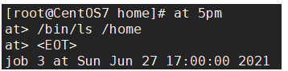
明天17点钟，输出时间到指定文件内 比如/root/date100.log

九、Linux磁盘分区、挂载¶
9.1Linux分区¶
原理介绍
Linux来说无论有几个分区，分给哪一目录使用，它归根结底就只有一个根目录，一个独立且唯一的文件结构，Linux中每个分区都是用来组成整个文件系统的一部分
**Linux采用了一种叫”载入“的处理方法，**它的整个文件系统包含了一整套的目录，且将一个分区和一个目录联系起来。这时要载入的一个分区将使它的存储空间在一个目录下获得

硬盘shuo’ming
Linux硬盘分IDE硬盘和SCSI硬盘，目前基本上是SCSI硬盘
对于IDE硬盘，驱动驱动标识符为” hdx~ “，其中”hd“表明分区所在的设备类型，这里是指IDE硬盘了。”x“为盘号（a为基本盘，b为基本从属盘，c为辅助主盘，d为辅助从属盘），”~“代表分区，前四个分区用数字1到4表示，他们是主分区和拓展分区；从5开始就是逻辑分区。例，hda3表示为第一个IDE硬盘上的第三个主分区或拓展分区，hdb2表示为第二个IDE硬盘上的第二个主分区或拓展分区
对于SCSI硬盘则标识为”sdx~“，**SCSI硬盘是用”sd“来表示分区所在设备的类型的，**其余则和IDE硬盘的标识方式一样
查看所有的设备挂载情况
命令：lsblk 或者 lsblk -f
针对第二张图
sda下指得是分区情况
FSTYPE 指的是文件类型
UUID值得是分区得唯一标识符（40个位）
MOUNTPOIN 挂载点
9.2挂载的经典案例¶
以增加一块硬盘为例来熟悉磁盘的相关指令和深入理解磁盘分区、挂载、卸载的概念。
如何为linux系统增加一块硬盘？

1.虚拟机添加硬盘
在vmware上实现

重启虚拟机
重启后的分区情况[外链图片转存失败,源站可能有防盗链机制,建议将图片保存下来直接上传

2.分区
分区命令
fdisk /dev/sdb
(dev（device)这个目录中包含了所有Linux系统中使用的外部设备。但是不是存放外部设备的驱动程序。它实际上是一个访问这些外部设备的端口就。我们可以非常方便的去访问这些外部设备，和访问一个文件，一个目录没有任何区别）
sdb就是再dev下面的
开始对 /sdb分区
m 显示命令列表 p 显示磁盘分区 同 fdisk -l n 新增分区 d 删除分区 w 写入并退出 说明：开始分区后输入n，新增分区，然后选者p，分区类型为主分区。两次回车默认剩余全部空间。最后输入w写入分区并退出，若不保存退出输入q
3.格式化
格式化磁盘 // 格式化指定文件类型 之后才能用
分区命令：
mkfs -f ext4 /dev/sdb1 // vext4是分区类型

4.挂载（将一个分区与一个目录联系起来）
挂载令： mount 设备名称 挂载目录 卸载命令： umout 设备名称（或者已挂载的目录）

注意: 用命令行挂载，重启后就会失效
5.设置可以自动挂载
永久挂载：通过修改/etc/fstab实现挂载
添加完成后，执行mount -a立即生效
9.3磁盘情况查询¶
查看系统整体磁盘 使用情况
基本语法
df -h
应用实例：查询系统整体磁盘使用情况（使用率到了80以上就不正常了）

查询指定目录 的磁盘占用情况
基本语法
du -h 目录名
查询指定目录的磁盘占用情况，默认为当前目录
选项
-s 指定目录占用大小汇总
-h 带计量单位
-a 含文件
-c 列出明细的同时，增加汇总值
--max-depth=1 子目录深度
案例：查询opt目录的磁盘占用情况，深度为1
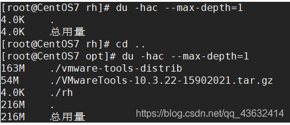
十、LInux网络配置
10.1Linux网络配置原理图¶
10.2配置一个指定的ip(不然每次都会变)¶
直接修改配置文件来制定IP，并可以连接到外网（cxy推荐）
编辑 vim /etc /sysconfig/network-scripts/ifcfg-ens33
修改前

要求：将IP地址配置为静态的，比如ip地址为192.168.200.130
修改后

ifcfg-ens33文件说明


重启网络服务或者重启兄系统生效
service network restart reboot
ping指令
ping ip(或域名) （测试连通性）
ping www.baidu.com
10.3设置主机名和hosts映射 (配置别名)¶
设置hosts映射
windows
C:\windows\System32\drivers\etc\hosts 文件指定即可
liunx
在/etc/hosts 文件 指定
主机名解析过程分析（hosts、DNS）
hosts文件是什么：一个文本文件，用来记录IP和hostname（主机名）的映射关系
DNS（Domain Name System，域名系统）：是互联网上作为域名和IP地址相互映射的一个分布式数据库
主机名解析机制分析 应用实例：用户在浏览器输输入了www.baidu.com
1.浏览器先检查浏览器缓存中有没有该域名解析ip地址，有就先调用这个IP完成解析；如果没有，就检查DNS解析器缓存，如果有就直接返回ip完成解析。（这两个缓存可以理解为本地解析器缓存）
（一般来说，当电脑第一次成功访问某一网站后，在一定的时间内，浏览器或者操作系统会缓存它的ip地址DNS解析记录，如在命令行输入
ipconfig /displaydns //DNS缓存解析 ipconifg /flushdns //手动清理dns缓存
2.如果本地解析器缓存没有找到对应的映射，则检查系统系统中的hosts文件中有没有配置对应的域名ip映射。如果有，则完成解析并返回
3.如果本地DNS解析器缓存和hosts文件中均没有找到对应的ip，则到域名服务DNS进行解析

十一、进程管理(ps)¶
11.1基本¶
在Linux中，每一个执行的程序都被称为一个进程。每一个进程都被分配一个ID号（pid，进程号）
windows下的pid
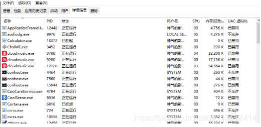
linux：top指令 ==可以看动态监控那章==
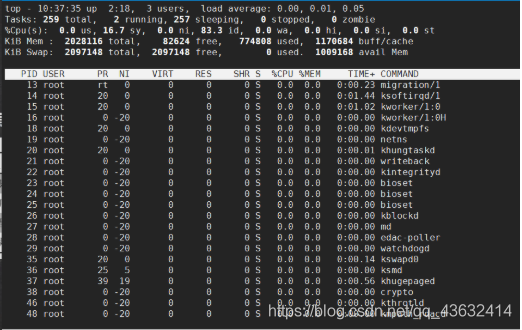
每个进程都可能以两种方式存在。前台与后台，所谓前台进程就是用户目前屏幕上可以进行操作的。后台进程则是实际在操作，但由于屏幕上无法看到的进程，通常使用后台方式执行。
一般系统的服务都是以后台进程的方式存在，而且都会常驻在系统中。直到关机才会结束
11.2显示系统执行的进程¶
ps 命令是用来查看目前系统中，有哪些正在执行的进程 ，以及他们的执行状况。可以不加任何参数

ps显示的信息选项
| 字段 | 说明 |
|---|---|
| PID | 进程识别号 |
| TTY | 终端机号 |
| TIME | 此进程所消耗CPU时间 |
| CMD | 正在执行的命令或进程名 |
ps -a:显示当前终端的所有进程信息
ps -u:以用户的格式显示进程信息
ps -x:显示后台进程运行的参数
执行ps -aux
参数解释
USER：进程执行用户
PID：进程号
%CPU：当前进程占用cpu的百分比
%MEM：占用物理内存的百分比
VSZ：进程占用虚拟内存大小（KB）
RSS：进程占用的物理内存的大小（KB）
TTY：终端名称
STAT：运行状态，S-表示sleep休眠、s-表示该进程是会话的先导进程，N-表示进程拥有比普通优先级更低的优先级，R-表示正在运行，D-短期等待，z-僵尸进程，T-被跟踪或者被停止等等
STARTED：执行的开始时间
TIME：占用CPU时间
COMMAND：启动进程所用的命令和参数，如果过长会被截断显示
ps -ef | grep xxx 是以全格式显示xxx的进程，查看进程的父进程
-e 显示所有的进程 -f 全格式 BSD风格: ps -ef|grep xxx

UID：用户ID
PID：进程ID
PPID：父进程ID
C：cpu用于计算执行优先的因子。数值越大，表明进程是CPU密集型运算，执行优先级会降低；数值越小，表明进程是I/O密集型运算，执行优先级会提高
STIME：进程启动时间
TTY：完整的终端名称
TIME：CPU占用时间
CMD启动进程所用的命令和参数
ps -ef|grep sshd
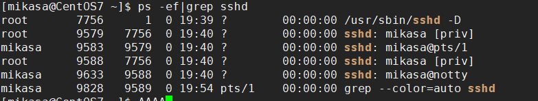
sshd进程是1号进程的子进程，9579有是7756的子进程
终止进程kill 和 killall
若是某一个进程执行一半需要停止时，或是已消了很大的系统资源时，此时可以考虑停止该进程。使用kill命令来完成此项任务
基本语法
kill -9 进程号 功能描述：通过进程号杀死进程 killall 进程名称 功能描述：通过进程名杀死进程也支持通配符，这在系统因负载过的很慢时很有用
常用选项：-9 表示强迫进程立即停止
案例:
踢掉某个非法登录用户（mikasa）

ps- ef|grep sshd后可知用户mikasa登录的进程号为9583
kill 进程号
kill 9583
用户mikasa的连接关闭
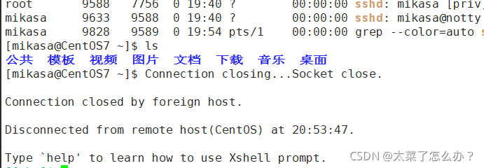
终止远程登录服务sshd，在适当时候再次重启sshd服务

kill 7756
结束远程登录服务sshd后用户无法通过xshell连上Linux虚拟机
启动sshd服务
/bin/systemctl start sshd.service
终止多个gedit
killall gedit
强制杀掉一个终端
ps -aux | grep bash 找出终端的进程号
killall -9 bash对应的进程号

11.3查看进程树 pstree¶
基本语法
pstree [选项] 可以更加直观的来看进程信息
常用选项
-p 树状形式显示进程的pid
-u 树状形式显示进程的所属用户
十二、服务（service）管理¶
**服务（service）本质就是进程，但是时运行在后台的，通常都会监听某个端口，等待其他程序的请求，**比如（mysqld，sshd 防火墙等），因此称为守护进程，是Linux中非常重要的知识点

12.1service命令¶
service管理指令
service 服务名 [start| stop| restart| reload | status]
在CentOS7.0后很多服务不再使用service，而是systemctl
service指令管理的服务在 /etc/init.d查看
案例
使用servce指令，查看，关闭，启动network 不要在xshell中执行，关闭网络后，连接sshd服务会断开连接)
查看 服务名：
方式1：使用setup——>系统服务，就可以看到全部
带*号的服务 是随着linux的启动 自动启动，没有带 *号的都是需要手动启动的
退出按Tab

方式2：/etc/init.d 看到service指令管理的服务ls -l /etc/init.d
扩展：linux很多服务以d结尾的原因:
d代表deamon 守护进程
Linux的大多数服务就是用守护进程
守护进程是运行在Linux服务器后台的一种服务程序
它周期地执行某种任务或等待处理某些发生的事件
比如：xinetd提供网络服务，sshd提供ssh登录服务，httpd提供web服务
12.2服务的运行级别¶
linux系统有七种运行级别（runlevel）：
常用的是级别3和5
运行级别0：系统停机状态，系统默认运行级别不能设为0，否则不能正常启动
运行级别1：单用户工作状态，root权限，用于系统维护，禁止远程登录
运行级别2：多用户状态（没有NFS），不支持网络
运行级别3：完全的多用户状态（有NFS），登录后进入控制台命令行模式
运行级别4：系统未使用，保留
运行级别5：X11控制台，登陆后进入图形GUI模式
运行级别6：系统正常关闭并重启，默认运行级别不能设为6，否则不能正常启动
开机的流程说明

CentOS7运行级别说明
在/etc/initab，进行了简化如下
multi-user.target:analogous to runlevel 3 graphical.target:analogous to runlevel 5
#to view current default target,run: systemctl get-default
#To set a default target,run: systemctl set-default TARGET.target
12.3chkconfig指令(在各个运行级别中)¶
作用:
1.通过chkconfig命令可以给服务在各个运行级别中的 启动/关闭
2.chkconfig指令管理的服务在 /etc/init.d查看
注意：CentOS7.0后，很多服务使用systemctl管理
基本语法:
chkconfig --list | grep xxx 查看某个服务
// chkconfig 服务名 --list 查看服务
chkconfig --level 5 服务名 on/off 对服务在各等级下的状态进行控制
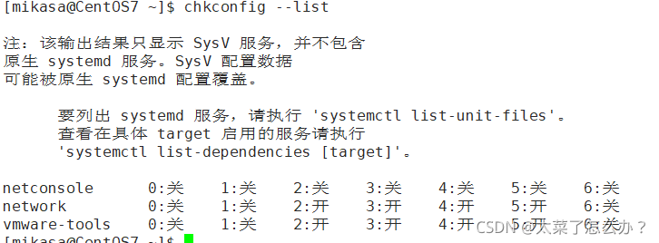
案列
对network服务进行操作，把network在3运行级别关闭自启动
chkconfig --level 3 network off
注意：chkconfig重新设置服务后自启动或关闭，需要重启机器reboot生效
12.4systemctl命令¶
CentOS7.0后很多服务不再使用service，而是systemctl
systemctl管理命令
systemctl [start | stop |restart |status ] 服务名 // 临时的
使用 ls -l /usr/lib/systemd/system | grep xxx 中查看systemctr服务
比如看防火墙的:
systemctl设置服务的自启动状态
systemctl list-unit-files | grep 服务名 (查看服务开机启动状态) systemctl enable 服务名 （设置服务开机启动） // 永久设置 systemctl disable 服务名 (关闭服务开机启动)关闭和开启都是默认的3和5两级别 // 永久设置 systemctl is-enabled 服务名 (查询某个服务是否是自启动的)
案列：
ll /usr/lib/systemd/system |grep fire 查找防火墙服务 systemctl list-unit-files | grep firewalld 查看当防火墙的服务状态 systemctl is-enabled firewalld 查看防火墙服务是否是自启的 查看当前防火墙的状态，关闭防火墙和重启防火墙 systemctl status firewalld 停止防火墙 systemctl stop firewalld 启动防火墙 systemctl s

细节点
关闭或者启动防火墙后，立即生效。[telnet测试 某个端口即可]
这种方式只是临时生效，当重启系统后，还是回归以前对服务的设置
如果设置某个服务自启动或关闭永久生效，要使用systemctl [enable|disable]服务名
12.5打开或者关闭指定端口¶
在真正的生产环境，往往需要将防火墙打开，但是如果我们把防火墙打开，那么外部请求数据包就不能给服务器监听端口通讯。这时，需要打开指定的端口。比如80，22，8080
firewall指令
==注意: 端口号/协议 通过 netstat -anp | more==
打开端口
firewall-cmd --permanent --add-port=端口号/协议 // permanent n.永久
关闭端口
firewall-cmd --permanent --remove-port =端口号/协议
无论是关闭还是开启端口都需要重新载入防火墙才能生效
firewall-cmd --reload
查看端口是否开放
firewall-cmd --query-port=端口/协议
案例
启用防火墙，测试111端口是否能telnet
开放111端口

再次关闭111端口

十三、动态监控(top)¶
13.1动态监控进程的基本语法¶
top和ps命令很相似。他们都用来显示正在执行的进程Top和ps最大的不同处在于top在执行一段时间可以更行正在运行的进程
基本语法
top [选项]
选项说明
| 选项 | 功能 | 实例 |
|---|---|---|
| -d 秒数 | 指定top命令每隔几秒更新。默认是3秒 | top -d 5 |
| -i | 是top不显示任何闲置或者僵死进程 | |
| -p | 通过指定监控进程ID来仅仅监控某个进程的状态 |
僵死进程：进程已经死掉了（进程运行结束），但是内存没有被释放掉。僵死进程需要定时清除！！

其中cpu使用率和KiB Mem(内存管理）最为重要
13.2动态监控进程的交互操作¶
交互操作说明
| 操作 | 功能 |
|---|---|
| P | 以CPU施一公率排序，默认就是此项 |
| M | 以内存使用率排序 |
| u | 输入用户名 |
| N | 以PID排序 |
| q | 退出top |
实例
案例1.监视特定用户，比如说监控mikasa用户 top：输入此命令，按回车键，查看执行的进程 然后输入“u”,回车，在输入用户名，即可 案例2：终止指令的进程 先输入top指令后，在输入“k“ ，在输入想要终止的进程号 案例3：指定系统状态更新的时间（每隔10秒自动更新）（默认的是3秒） top -d 10
13.3监控网络状态¶
查看系统网络情况netstat
基本语法
netstat [-anp]
选项说明
-an 按一定顺序排列输出 -p 显示所在进程
例子:
使用 netstat -an :

增加一个tom用户

检测主机连接命令ping
是一种网络检测工具，它主要是用来检测远程主机是否正常，或是两部主机间的网线或网卡故障
十四、RPM与YUM¶
14.1rpm包的管理¶
介绍
rpm用于互联网下载包的打包及安装工具，它包含在某些LInux分发版中。它生成具有.RPM拓展名的文件。RPM是RedHat Package Manager （RedHat软件包管理工具）的缩写，类似windows的setup.ext，这一文件格式名称虽然打上了RedHat的标志，但理念是通用的。
Linux的分发版都有采用（suse，redhat，centos等），可以说是公用的行业标准。
rpm包的简单查询指令
rpm -qa 查询所安装的所rpm包软件包
rpm -qa | more rpm -qa | grep xxx(如：rpm -qa | grep firefox) 查看当前系统是否安装firefoxrpm -qa | grep firefox

rpm包名基本格式
一个rpm包名：firefox-60.2.2-1.el7.centos.x86_64 名称：firefox 版本号：60.2.2-1 适用操作系统：el7.centos.x86_64 表示centos7.x的64位系统 （如果似乎i686、i386表示32位系统，noarch表示通用）
rpm包的其它查询指令
rpm -q 软件包名 查询软件包信息
rpm -q firefox
rpm -qi 软件包名 查询软件包信息
rpm -qi firefox
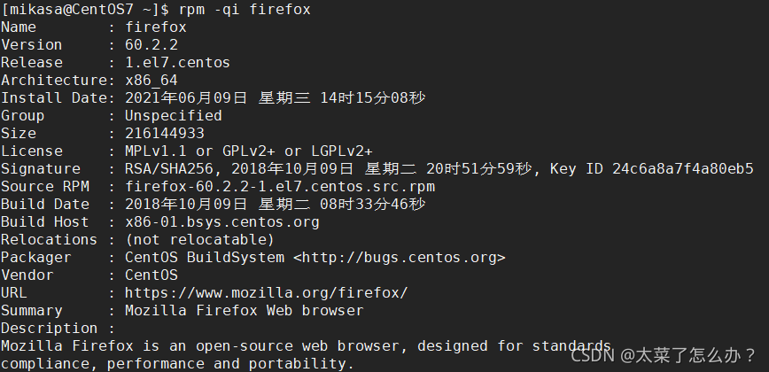
rpm -ql 软件包名 查询软件包中的文件
rpm -qf 文件全路径名 查询文件所属的软件包
rpm -af /etd/shadow
安装rpm包
基本语法
rpm -ivh RPM包全路径名称 rpm -ivh /opt/firefox (tab补全再回车)
参数说明
i=install 安装 v=verbose 提示 h=hash 进度条
卸载rpm包
基本语法
rpm -e RPM包的名称 //erass rpm -e firefox 删除firefox 软件包
注意
如果其它软件包依赖于要卸载的软件包，卸载时则会产生错误的信息
如果必须要删除这个软件包，可以增加参数 –nodeps，就可以强制删除，但是一般不推荐这么做，因为依赖于该软件包的程序可能无法运行
rpm -e --nodeps 软件包名
14.2yum¶
介绍：Yum是一个Shell前端软件包管理器。基于RPM包管理，能够从指定的服务器自动下载RPM包并安装. 相当于应用商店，可以自动处理依赖关系，并且一次安装所有依赖的软件包
yum的基本指令
查询yum服务器是否有需要安装的软件（软件列表） yum list|grep xx 安装指定的yum包（下载安装) yum install xxx
实列：使用yum的方式安装firefox
rpm -e firefox 先卸载centos中的firefox yum list | grep firefox 查询firefox的软件 yum install firefox 下载！
注意: opt是放软件包的
十五、 linux g++¶
g++是干什么用的
首先 c++不一定要用这个g++。1. 如果电脑是Windows，那么就不用C++，用VS系列的IDE，一口气写代码+编译。2.如果是Linux系统学习C++，一般用g++，Mac上用clang（Linux也可以用clang, 不过g++是Linux上的主流）
文件其实就是普通的纯文本文件。 在文本和可执行程序之间，g++做所谓的编译。
g++就是将包含了代码的文本文件编译（预处理、编译、汇编、链接）成可执行的文件。
==比如:==
你写了一段代码(名为a.cpp)，可以用任意文本编辑软件来写，不需要是IDE。
#include <iostream>
using namespace std;
int main()
{
cout<< "Hello, World!" << endl;
return 0;
}
下面我们开始编译程序，会经历4个步骤。
预处理
第一步，预处理， 以#开头的行都将被预处理器当做预处理命令来解释，比如#include包含头文件，在这一步就会将系统或本地的头文件插入的当前文本中。如果 #define 定义的宏则这这一步做展开（直接替换）
g++ -E a.cpp
编译
第二步，编译, 就是把文本中的代码转成汇编代码。
g++ -S a.cpp
会生成一个a .s文件，里面是汇编代码，这一步还是文本文件。
汇编
第三步，汇编，就是把汇编代码转成目标文件的格式
g++ -c a.cpp
会生成一个a .o文件，这一步开始已经是二进制文件了。但还不是可执行文件。
链接
第四步，链接，就是把上一步的目标文件转成可执行文件。
默认生成的可执行文件名称就是 a.out （默认可执行文件都叫是a.out)
例子:

预编译，宏替换，头文件加载：
g++ -E test.cpp test.h -o test.i // -o test.i 输出成什么文件

编译，生成汇编代码：

汇编，生成机器码：

汇编+链接，生成可执行文件：
十六、 shell脚本¶
Shell是一个命令行解释器，它为用户提供了一个向Linux内核发送请求以便运行程序的界面系统级程序，用户可以用Shell来启动、挂起、停止甚至是编写一些程序。看一个示意图

16.1 shell脚本的执行方式¶
脚本格式要求
脚本以#!/bin/bash开头
2. 脚本需要有可执行权限
编写第一个Shell脚本 需求说明:创建一个Shell脚本，输出hello world!
#!/bin/bash
echo "hello, world~"
脚本的常用执行方式 方式1 (./脚本) 说明:首先要赋予helloworld.sh脚本的 加上 可执行权限，再执行脚本
比如: ./hell.sh
方式2 (sh + 脚本) 说明:不用赋予脚本+x权限，直接执行即可。
16.2 shell变量¶
Shell变量介绍
Linux Shell中的变量分为，系统变量和用户自定义变量
系统变量:
$HOME、$PWD、$SHELL、$USER等等， 比如:echo $HOME 等等.
显示当前shell中所有变量: set
shell变量的定义 基本语法
定义变量: 变量名=值 (不能有空格)
#!/bin/bash a=100 echo "a=$a" 结果: a=100
撤销变量: unset变量
#!/bin/bash a=100 echo "a=$a" unset a echo "a=$a" 结果: a=100 a=
声明静态变量: readonly 变量. 注意:不能对静态变量 unset
readonly b=2 unset b

shell变量的使用
个人喜欢加” “ 并且一般是字符串都加上 “”
echo "a=$a"
定义变量规范
变量名称可以由字母、数字和下划线组成，但是不能以数字开头。5A=200(×)
等号两侧不能有空格
变量名称一般习惯为大写，这是一个规范
16.3 将命令的结果 赋给变量¶
A=`date` 反引号，运行里面的命令，并把结果返回给变量A
A=$(date) 等价于反引号 // 推荐
```shell
#!/bin/bash
c=`date`
D=$(date)
echo "C=$c"
echo "D=$D"
结果:
C=Thu Aug 11 01:06:53 PDT 2022
D=Thu Aug 11 01:06:53 PDT 2022
```
DATETIME=$ (date "+%Y-%m-%d %H:%M:%S")
16.4 设置环境变量¶
●基本语法
export变量名=变量值（功能描述:将shell变量输出为环境变量/全局变
source 配置文件 (功能描述:让修改后的配置信息立即生效)
echo $变量名 (功能描述:查询环境变量的值)
使用
在vim /etc/profile文件中定义TOMCAT_HOME环境变量·

查看环境变量TOMCAT_HOME的
终端中 echo $TOMCAT_HOME
在shell程序中使用TOMCAT_HOME
脚本 echo "tomcat_home=$TOMCAT_HOME"
注意: 在输出TOMCAT_HOME 环境变量前，需要让其生效source /etc/profile
16.5 注释¶
单行注释
#案例1:计算(2+3)X4的值
多行注释
:<<!
c=`date`
D=$(date)
echo "C=$c"
echo "D=$D"
!
16.6 位置参数变量¶
介绍 当我们执行一个shell脚本时，如果希望获取到命令行的参数信息，就可以使用到位置参数变量
基本语法
$n （功能描述:n为数字，$0代表命令本身，$1-$9代表第一到第九个参数，十以上的参数，十以上的参数需要用大括号包含，如${10}) $*（功能描述:这个变量代表命令行中所有的参数，$*把所有的参数看成一个整体) $@（功能描述:这个变量也代表命令行中所有的参数，不过$@把每个参数区分对待) $#(功能描述:这个变量代表命令行中所有参数的个数)
●位置参数变量 案例:编写一个shell脚本position.sh，在脚本中获取到命令行的各个参数信息
案例:
./myshell.sh 100 200，这个就是一个执行SnelI命令，可以在myshell脚本中获取到参数的信息
#!/bin/bash
echo "$0 $1 $2"
echo "所有的参数=$*"
echo "$@"
echo "参数的个数=$#"
效果:
[root@localhost shcode]# ./myshell.sh
./myshell.sh
所有的参数=
参数的个数=0
[root@localhost shcode]# ./myshell.sh 100 200
./myshell.sh 100 200
所有的参数=100 200
100 200
参数的个数=2
16.7 预定义变量¶
基本介绍 就是shell设计者事先已经定义好的变量，可以直接在shell脚本中使用
基本语法
$$（功能描述: 当前进程的进程号(PID)) $!（功能描述: 后台运行的最后一个进程的进程号（PID)) $?（功能描述: 最后一次执行的命令的返回状态。如果这个变量的值为0，证明上一个命令正确执行; 如果这个变量的值为非0(具体是哪个数，由命令自己来决定），则证明上一个命令执行不正确了。) if [ "$?" = "0" ]
案例 : 在一个shell脚本中简单使用一下预定义变量preVar.sh
 ·
·
16.8 运算符¶
基本介绍 在shell中进行各种运算操作
基本语法
1. “$[运算式]” 或者“$((运算式))” 或者 `expr m \* n` . expression表达式 注意expr运算符间要有空格 . expr中的 \*乘 /除 %取余
案例1: 计算(2+3)X4的值
案例2∶ 请求出命令行的两个参数[整数]的和

16.9 条件判断¶
基本语法 if [ condition ] 注意condition前后必须要有空格 #空返回true,可使用 $? 验证 (0为true , >1为false)
if [ "ok" = "ok"] then echo "equal" fi
√应用实例 if [ hspEdu ] 返回true if [ ] 返回false if [condition ] && echo OK || echo notok 条件满足，执行后面的语句
判断语句
1) = 字符串比较 2) 两个整数的比较 -lt 小于 -le 小于等于 -eq 等于 -ne 不等于 -gt 大于 -ge 大于等于 3) 按照文件权限进行判断 -r 有读的权限 -w 有写的权限 -x 有执行的权限 4)按照文件类型进行判断 -f "文件路径" //文件存在并且是一个常规的文件 -e "文件路径" //文件存在 -d "文件路径" //文件存在并是一个目录 ! -d "文件路径" // 文件存在并是一个目录不存在
案例 案例1: “ok”是否等于”ok”
判断语句: =

案例2: 23是否大于等于 22 判断语句: -ge
案例3 : /root/shcode/aaa.txt目录中的文件是否存在 判断语句: -f
if [ -f "/root/shcode/aaa.txt" ] then echo "存在" else echo "不存在" fi

16.10 流程控制¶
1. if 语法
if [ "ok" = "ok"] then echo "equal" fi
**多分支语法 : **
if [ "ok" = "ok"] then echo "equal" elif [ "o" = "o"] then echo "equal" fi
注意事项:[条件判断式]，中括号和条件判断式之间必须有空格√应用实例ifCase.sh
案例:
请编写一个shell程序，如果输入的参数，大于等于60，则输出”及格了”，如果小于60,则输出“不及格”

2. case语句
**语法 : **
#!/bin/bash
case $1 in
"1")
echo "周一"
;;
"2")
echo "周二"
;;
*)
echo "other"
;;
esac
效果:

16.11 for循环¶
基本语法1
for 变量 in值1值2值3…. do 程序/代码 done
应用实例testFor1.sh
案例: 打印命令行输入的参数
!bin/bash # $* 是把终端参数当成一个整体 # $@ 是把终端参数会区分的 for i in "$*" # 用$@ 或者 不加双引号就是一个一个依次输出了 do echo "num is $i" done #效果: # 用"$*" [root@localhost shcode]# sh testFor.sh 10 20 30 num is 10 20 30 # 用$@ 不加双引号就是一个一个依次输出了 [root@localhost shcode]# sh testFor.sh 10 20 30 num is 10 num is 20 num is 30
基本语法2
for ((初始值;循环控制条件;变量变化)) do 程序/代码 done
应用实例testFor2.sh 案例: 从1加到100的值输出显示
#!bin/bash SUM=0 for ((i = 1; i <= 100; i++)) do SUM=$[$SUM+$i] done echo "总和=$SUM" #效果: [root@localhost shcode]# sh testFor.sh 总和=5050
16.12 while循环¶
基本语法1
while[ 条件判断式 ] #while和 [ ] 有空格，条件判断式和[]也有空格 do 程序/代码 done
注意: while和 [ ] 有空格，条件判断式和[]也有空格
案例1:
从命令行输入一个数n，统计从1+x+n的值是多少
#!/bin/bash
SUN=0
i=0
while [ $i -le $1 ]
do
SUM=$[$SUM+$i]
i=$[$i+1]
done
echo $SUM

16.13 read获取输入¶
基本语法
read(选项)(参数)
选项:
-p: 指定读取值时的提示符; -t: 指定读取值时等待的时间(秒），超出指定的时间内输入，就不再等待
参数: 变量: 指定读取值的变量名
案例: 案例1: 读取控制台输入一个NUM1值
#!/bin/bash
read -p "请输入一个数=" NUM1
echo "$NUM1"
#结果:
请输入一个数=22
22
案例2: 读取控制台输入一个num值，在10秒内输入。
v#!/bin/bash
read -t 10 -p "请输入第二个数" NUM2
echo "$NUM2"
#结果:
请输入第二个数=22
22
16.14 函数¶
函数介绍 shell编程和其它编程语言一样，有系统函数，也可以自定义函数。
系统函数 basename基本语法 功能: 返回完整路径最后/ 的部分，常用于获取文件名
basename [pathname] [suffix] basename [string] [suffix]（功能描述:basename命令会删掉所有的前缀包括最后一个(‘T)字符，然后将字符串显示出来。
选项: suffix为后缀，如果suffix被指定了, basename会将pathname或string中的suffix去掉。
dirname基本语法
功能: 返回文件名前路径 的部分
案例;
案例1: 请返回/home/aaa/test.txt 的”test.txt”部分
basename
[root@localhost shcode]# basename /home/aaa/test.txt
test.txt
[root@localhost shcode]# basename /home/aaa/test.txt .txt
test

dirname
[root@localhost shcode]# dirname /home/aaa/test.txt
/home/aaa
[root@localhost shcode]# dirname /home/aaa/bbb/test.txt
/home/aaa/bbb
注意: 这两个函数经常使用在脚本文件里，得到一般是全路径，需要用这两个函数做处理
16.15 自定义函数¶
基本语法
function funname() { 程序/代码 }
调用直接写函数名: funname 值1 值2
案例:
案例1: 计算辅入两个参数的和，getSum
#定义函数 getSum
function getSum()
{
SUM=$[$n1+$n2]
echo “和是=$SUM"
}
#输入两个值
read -p “请输入一个数" n1
read -p “请输入一个数" n2
#调用自定义函数
getSum $nl $n2
结果:

16.16 综合案例¶
Shell编程综合案例
每天凌晨2:30备份;
备份开始和备份结束能够给出相应的提示信息
备份后的文件要求以备份时间为文件名，并打包成.tar.gz的形式，比如:2021-03-12_230201.tar.gz
在备份的同时，检查是否有10天前备份的数据库文件，如果有就将其删除。

BACKUP="/data/backup/db"
BATETIME=$(date "+%Y-%m-%d_%H%M%S")
echo "$BATETIME"
DATA="数据库"
if [ ! -d "$BACKUP/$BATETIME" ]
then
mkdir -p "$BACKUP/$BATETIME"
fi
echo "$DATA" | gzip > "$BACKUP/$BATETIME/$BATETIME.gz"
#将文件处理成 tar.gz
cd "$BACKUP"
tar -czvf "$BATETIME.tar.gz" "$BATETIME"
#删除对应的多余文件
rm -rf "$BATETIME"
#删除10天前的文件
find "$BACKUP" -atime +10 -name "*.tar.gz" -exec -rf {} \;
echo "操作成功"
"test.sh" 26L, 474C
设置crond任务调度(定时任务)
crontab -e
0 2 * * * /root/shcode/test.sh
效果:
十七、 日志管理¶
17.1 基本介绍¶
日志文件是重要的系统信息文件，其中记录了许多重要的系统事件，包括用户的登录信息、系统的 启动信息、系统的安全信息、邮件相关信息、各种服务相关信息等。
日志对于安全来说也很重要，它记录了系统每天发生的各种事情，通过日志来检查错误发生的原因， 或者受到攻击时攻击者留下的痕迹。
可以这样理解日志是用来记录重大事件的工具
/var/log/目录就是系统日志文件的保存位置
==进入 cd /var/log/ 可以查看日志==
| 日志文件 | 说 明 |
|---|---|
| /var/log/cron | 记录与系统定时任务相关的曰志 |
| /var/log/cups/ | 记录打印信息的曰志 |
| /var/log/dmesg | 记录了系统在开机时内核自检的信总。也可以使用dmesg命令直接查看内核自检信息 |
| /var/log/btmp | 记录错误登陆的日志。这个文件是二进制文件，不能直接用Vi查看，而要使用lastb命令查看。命令如下： [root@localhost log]#lastb root tty1 Tue Jun 4 22:38 - 22:38 (00:00) #有人在6月4 日 22:38便用root用户在本地终端 1 登陆错误 |
| /var/log/lasllog | 记录系统中所有用户最后一次的登录时间的曰志。这个文件也是二进制文件.不能直接用Vi 查看。而要使用lastlog命令查看 |
| /var/Iog/mailog | 记录邮件信息的曰志 |
| /var/log/messages | 它是核心系统日志文件，其中包含了系统启动时的引导信息，以及系统运行时的其他状态消息。I/O 错误、网络错误和其他系统错误都会记录到此文件中。其他信息，比如某个人的身份切换为 root，已经用户自定义安装软件的日志，也会在这里列出。 |
| /var/log/secure | 记录验证和授权方面的倍息，只要涉及账户和密码的程序都会记录，比如系统的登录、ssh的登录、su切换用户，sudo授权，甚至添加用户和修改用户密码都会记录在这个日志文件中 |
| /var/log/wtmp | 永久记录所有用户的登陆、注销信息，同时记录系统的后动、重启、关机事件。同样，这个文件也是二进制文件.不能直接用Vi查看，而要使用last命令查看 |
| /var/tun/ulmp | 记录当前已经登录的用户的信息。这个文件会随着用户的登录和注销而不断变化，只记录当前登录用户的信息。同样，这个文件不能直接用Vi查看，而要使用w、who、users等命令查看 |
17.2 日志管理服务¶
日志管理服务 rsyslogd CentOS7.6日志服务是rsyslogd , CentOS6.x日志服务是syslogd 。 rsyslogd功能更强大。rsyslogd 的使用、日志文件的格式，和syslogd服务兼容的。
原理示意图

查询Linux 中的rsyslogd 服务是否启动 ps aux | grep “rsyslog” | grep -v “grep”
查询rsyslogd 服务的自启动状态 systemctl list-unit-files | grep rsyslog
配置文件: /etc/rsyslog.conf 日志级别分为: debug ##有调试信息的，日志通信最多 info ##—般信息日志，最常用 notice ##最具有重要性的普通条件的信息 warning ##警告级别 err ##错误级别，阻止某个功能或者模块不能正常工作的信息 crit ##严重级别，阻止整个系统或者整个软件不能正常工作的信息 alert ##需要立刻修改的信息 emerg ##内核崩溃等重要信息 none ##什么都不记录 注意:从上到下，级别从低到高，记录信息越来越少
**由日志服务rsyslogd记录的日志文件，日志文件的格式包含以下4列:**基本日志格式包含以下四列：
（1） 事件产生的时间 （2） 发生事件的服务器的主机名 （3） 产生事件的服务名或程序名 （4） 事件的具体信息
日志如何查看实例 查看一下/ar/log/secure日志，这个日志中记录的是用户验证和授权方面的信息来分析如何查看Nov 12 12:18:26

17.3 自定义日志服务¶
在/etc/rsyslog.conf 中添加一个日志文件/var/log/hsp.log,当有事件发送时(比如sshd服务相关事件)，该文件会接收到信息并保存。演示重启，登录的情况，看看是否有日志保存
vim /etc/rsyslog.conf 进入日志管理服务
重启服务 systemctl restart rsyslog.service
进入 cd /var/log/ 使用 cat hsp.log 查看自定义的日志